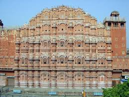

Temples
GALTAJI
A pre-historic Hindu pilgrimage site, the Galtaji Temple, is located only 10km away from Jaipur. One of the jewels of Jaipur, the temple complex encompasses natural fresh water springs and 7 holy ‘kunds' or water tanks. Among these kunds, the ‘Galta Kund', is the holiest one and is believed to never get dry. The site consists of several temples and sacred kunds (water tanks) in which pilgrims bathe. It is believed that a Saint named Galav lived here, practiced meditation, and did penance
BIRLA MANDIR
The Birla Temple, originally known as Lakshmi Narayan Temple, and is situated below the Moti Dungri Fort in Jaipur. Dedicated to Lord Vishnu and Goddess Lakshmi, this temple is a proud architectural landmark of Jaipur. Built in pure white marble, the Birla Temple is unlike the traditional ancient Hindu temples, and is built with a modern approach.

GOVIND DEV JI TEMPLE
The Hindu temple Govind Dev Ji is situated in Jaipur in Rajasthan state of India. It is located in the City Palace complex. The temple is dedicated to Govind Dev Ji (Lord Krishna). The image of the deity (murti) was brought from Vrindavan here by Raja Sawai Jai Singh II, the founder of Jaipur
The temple of Govind Dev Ji is one of the most sacred and famous tourist destinations in India. It is located in the City Palace complex, in Jaipur, Rajasthan. The deity, Govind Dev Ji, is none other than Lord Shri Krishna himself. It is believed that the image in this temple looks exactly how Lord Krishna looked during his incarnation on earth.
MOTI DUNGRI
The Moti Dungri Ganesh Temple was constructed by Seth Jai Ram Paliwal in the early eighteenth century, and continues to be one the most popular tourist destinations in Jaipur. Situated in the heart of Jaipur, the Moti Dungri temple is perched on a small hill, and is surrounded by an exotic palace.